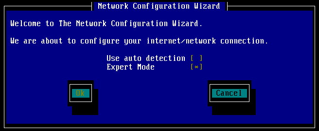
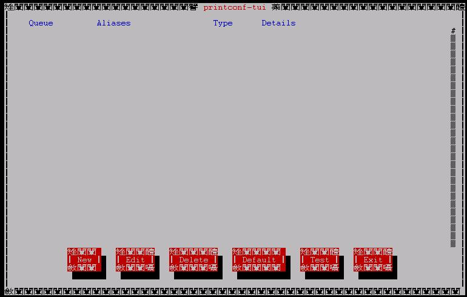

我们在 Linux 系统开机流程的说明中提及了相当多次的系统设定档案所在的目录，那就是 /etc/sysconfig 这个目录，您可以手动的修改一下该目录里面的各个档案，以使符合您的系统环境！底下我们会介绍关于这个目录底下各个档案所代表的意义啦！
由于这本书当中尚未提到关于网络架设的部分(若还写下去的话，那么这本书也就太重了…)，所以我们先以简单的方式来说明一下如何设定网络方面的功能，这个时候，每个 distribution 所提供的一些好用的小工具软件，就得给他了解一下的啦！底下我们分别介绍一下目前最流行的两套 distribution 的工具，分别是 Mandrake 与 Red Hat 的两个小工具呦！
在 Mandrake Linux 里头已经有一个相当好用的系统参数设定工具，那就是大家都耳熟能详的『 drakconf 』！这工具说穿了也没有什么特殊的地方，就是他将一些 /etc/sysconfig 里的设定参数给他做成图形界面就是了！基本上，如果你对系统熟的话，那么不需要使用 drakconf 也是可以的啦！直接修改 /etc/sysconfig 底下的东西就可以！好吧，闲话不多说，我们就来看一看 drakconf 的功能吧！在你输入 [root @test root]# drakconf 之后，就会出现底下的图样：
- 属性相依的套件需求：
如果您当初使用的安装方法是比较小的安装方式，例如鸟哥都不安装图形接口的，好让我那小的可怜的硬盘还可以被拿来当作数据备份之用…这个时候，很可能 drakconf 就没有被您安装上来！此时，请将您的 Mandrake 9.0 的 CD 1 拿出来，给他放入光驱当中，并且挂载上来，再使用 RPM 的方法，安装一下底下的各个套件：
userdrake-0.5-3mdk.i586.rpm
menudrake-0.7.1-3mdk.i586.rpm
rxvt-2.7.8-5mdk.i586.rpm
harddrake-ui-1.1.9-53mdk.i586.rpm
drakcronat-0.1.2-9mdk.noarch.rpm
drakconf-9.0-6mdk.i586.rpm
玩过了前面几章之后，千万不要不晓得我上面讲的是什么内容….如果忘记了，请回到前面的章节，并且『仔细的，好好的再看一遍』吧！这样安装完毕之后，就会有 drakconf 在你的系统当中！如果您想要知道你的 Linux 系统当中有没有 drak 为开头的指令要怎么寻找？别担心！回到第三部分讲 Shell 的地方，还记得 BASH 里面关于 <tab> 按键的用途吧！呵呵！试试看就知道会发生什么事情！
如上为 drakconf 的主要图示，在这些画面中，除了要您以键盘输入文字的时候会有底线之外，其它的时候，只要移动『上下左右』、『空白』、『tab』及『Enter』等按键操作即可！drakconf 主要仅是将几个小工具汇整成为一个啦！那么这个 drakconf 底下汇整了哪些小工具呢？看看上面的图示，您会发现有底下几个个别的小工具：大概就是这样啦！底下我们分别来说一说各个工具的内容吧：
- Add new users：新增账号工具，您可以参考第十三章的内容；
- Boot Configuration：就是 LILO 跟 Grub 的内容，参考十七章内容；
- Connection Sharing：这个就是鼎鼎大名的 DHCP ( Dynamic Host Configuration Protocol ) 主机的设定啦！就是让您的 Linux 成为 DHCP 主机，可以分配 IP 给同一个网域内的其它计算机呢！
- Display Configuration：设定您的显示模式，也就是在图形接口无法登入的时候，可以用来修正 Xfree86 这个图形使用者接口的工具！
- Internet & Network：设定网络啦！包括您的网络卡、主机名称等等！
- KeyBoard Configuration：键盘的设定，主要是键盘的格式；
- Mouse Configuration：设定鼠标的类型；
- Add new users：
新增使用者的方法我们都知道直接使用 useradd 再以 passwd username 设定密码即可！这个小工具即是帮我们进行这两个动作，其图示如下所示：
那个 User name 才是『账号』，至于 Real name 则是在 /etc/passwd 当中的第五栏说明栏的内容啦！输入完毕之后就给他 Accept user 即可！ 
- Boot Configuration
其实这个就是 /usr/sbin/drakboot 这支程序啦！他的功能亦即是我们在开机流程的内容所提到的 LILO 与 Grub 内容，就是进行开机管理啦！按下这个功能之后会出现如下的图示：
事实上，这个动作可以帮我们设定两个咚咚，第一个是分别设定 /etc/lilo.conf 或 /boot/grub/menu.lst 这两个设定档，第二个则是将该设定写入 MBR 或 Super Block 当中！记得回到开机流程去瞧一瞧内容即可！当然啦！由于他还可能会帮我们写入 MBR 或 Super Block 呢！所以还是要小心一点呢！
- Connection Sharing
这个动作是在帮我们主机进行 DHCP 设定的各个规划，由于我们尚未提到网站架设的部分，俺可不希望这里随便讲讲，结果您照着这里的作法也随便作作，最后就被怪客随便破解～所以呢，有兴趣的朋友您可以自行试做看看，其实很简单，照着出现的图样一步一步输入参数就对了！但是什么参数才是对的？呵呵！如果您真的很急的话，那么可以先参考底下的网站呢：
http://www.study-area.org/linux/servers/linux_dhcp.htm
http://linux.vbird.org/linux_redhat7.2/65dhcp.html
- Internet & Network
但是网络内容就得说一说了，因为如果不作的话，那么您的 Linux 怎么上网呢？OK！这里就来稍微谈一谈吧！现在上网的方式主要有三种，分别是：
- 固定制的 IP：使用的是称为 LAN ( Local Area Network ) 的方法；
- 浮动式的 ADSL ：就是使用 ADSL 呀！
- 浮动式的 Cable ：就是使用 DHCP 呀，同样也是选择 LAN 的方法。
我们先来谈一下比较简单的 LAN 的设定，首先，要使用 LAN 之前，请先确认您的网络参数，分别是：
- Protocol 固定( Static )或动态( Dynamic ) IP 分配
- IP 你的主机地址
- Network 你的主机网域
- Netmask 你的主机子网掩码
- Broadcast 你的主机的广播地址
- Gateway 你的主机所使用的通讯闸
- Hostname 你主机的名字！
- DNS 你需要 ISP 的 DNS 的 IP
其中，在协议(Protocol)的部分要特别注意了，若以 ISP 的角度来看，那么如果协议为 static 则是固定 IP 的设定方式，如果是 Dynamic 则是 Cable 的设定方式！这是因为 Dynamic 就是使用 DHCP 这个协议所造成的啦！好了，现在来看一看按下了 Internet & Network 这一项，会出现如下的图示，这个时候请选择 Configuration the connection 。
这个时候会出现是否自订设定或专家模式，然后请按下专家模式：

OK！既然要使用 LAN 所以使用 LAN connection 喔！
然后出现了硬件的选择项目，如下所示，在下图中显示了两张网络卡的模块，这是因为我有两张网络卡，所以上头会显示两个模块。所以，如果您的主机跟我的主机网络卡的形式或者是数量不同，那么您主机上面的图样就会跟我不相同！注意注意。好了，在下图中问你是否还有其它的网络设备？因为我知道没有其它的网络卡了，所以当然就选择 No ！
好了，底下要开始给他设定一下你的网络！在这个例子中，首先我们使用固定制的方式，使用了 192.168.1.2 这个私有 IP ，然后选择不要 bootp/dhcp ，并且设定在开机的时候启动，因此勾选 Start at boot ！
不过，如果你是使用 Cable 的话，或者是您公司有架设 DHCP 主机的话，那么上面的图示中，你就需要选择『Automatic IP 』这一项！而其它的就直接设定的跟我一样即可！这可是很重要的！然后再设定你的主机名称与 ISP 给你的 DNS 的 IP，还有 Gateway 或者是 Gateway 的装置！像我是以 eth1 做为对外的网络卡，因此就选择 eth1 ！
这样就设定 OK 啦！其实，以上的步骤就只是设定底下几个档案：
- /etc/sysconfig/network
- /etc/sysconfig/network-scripts/ifcfg-eth0
- /etc/resolv.conf
我们在网络架设篇再来聊一聊如何设定这些数据，包括使用手动的方式设定固定 IP 、 Cable 与 ADSL 上网的方式！
这些就是 drakconf 的主要功能了！当然，还有 X-window 里面的 XFree86 的硬件设定！不过，这些数据我们就在 X-Window 章节里面再提！
setup：
我们先来说一说 setup 的用法吧！以 root 的身份在 command line 输入 setup 就可以进入如下的画面：主要有底下几个设定的咚咚：
- Authentication configuration：这是关于系统性安全的设定项目；
- Firewall configuration ：这个是关于 ipchains 的防火墙机制设定；
- Keyboard configuration ：这个是键盘的类型设定项目；
- Mouse configuration ：设定鼠标的型态的地方啦；
- Network configuration ：设定网络参数的地方，包括你的 IP 呦！
- System services ：设定一些系统服务的地方；
- Printer configuration ：设定打印机；
- Sound card configuration ：就是设定声卡啦！
- Timezone configuration ：设定时区；
- X configuration ：设定 X-Window 相关的硬件设定！
- Authentication configuration ：
还记得我们在 账号管理 那一篇文章里面提到的东西吗？对啦！我们在管理密码的时候就是使用那个 shadow 的资料！好啦，那么怎么改变这些密码数据的设定呢？呵呵！就是在这一项！按下他之后会出现底下两个画面：
那个 NIS, LDAP, Hesiod 等等都是其它类型的 ID 与 pass word 管理服务器，这里我们不太需要使用到这么高级的服务器！所以只要简单的 Shadow 与 MD5 这两个编码过的安全防护即可！所以，您可以在这里勾选 Shadow 与 MD5 就行了！除非后来您还想要加入上述的服务器！( 注：这个项目完成之后，会写入/etc/sysconfig/authconfig这个档案当中！所以也可以直接修改这个档案即可！) 
- Firewall configuration ：
这是用来设定防火墙的！
- 在设定防火墙之前需要来了解一下什么是『防火墙』？简单的说，防火墙就是资料封包的过滤机制的套件，目前在 2.2.xx 上面使用的是 ipchains 这个封包过滤，至于 2.4.xx 则使用的是 iptables 这个封包过滤机制。此外，这两个封包过滤机制『不能同时开启』！
但是在这个 setup 当中的 firewall 比较诡异一点点，就是在 Red Hat 7.1 以后的版本中（包含这一版的 Red Hat 7.2 ）使用的 Kernel 是 2.4.xx 版本，这一版的适合的防火墙如前述是 iptables 这个机制，但是
- 这支程序使用来设定的却是『 ipchains 』真是的～～而且，另外一点比较怪异的是，
- 这个程序启动之后，所显示的是『程序默认值』而不是您目前的设定值，所以每次进入都会显示『Security Level 为 ( ) High 那一项！，不过，只要不按下 OK 的话，就不会改变您原先的设定！
基本上，这个东西用来设定 ipchains 是可以啦，但是用来设定 iptables 则『没有办法』，最起码我试不出来，如果您试出来的话，可得教教我呦！按下之后显示出来的样子如下：
请注意，在上面的设定当中，是适合于 ipchains 的，再强调一次，所以如果您使用了 iptables 作为您的防火墙机制，那么就不要使用这支程序了！另外，在第二个画面中，需要特别注意的是： 
- 如果您只有一张卡（例如上面的例子），那么千万注意『不要开启 eth0 』这个咚咚！上面的意思是说，『来自底下的界面卡(例如 eth0)或者是底下的 port 号，则予以接受』，那么当您接受 eth0 的请求，偏偏这个卡是对外卡，那么由于所有的要求都是由外界来的，所以底下的设定则完全没有用了！因为检查到界面卡的部分就予以放行的意思！这里请注意！
- 万一，若您有两张网络卡，一张对内（假设为 eth0 ）一张对外（假设为 eth1 ），那么对内信任对外不信任，则可以勾选 eth0 为信任的（沟成星号），而 eth1 则不勾！
那么这个设定在产生什么设定档案呢？
- 这个设定完成之后，会在 /etc/sysconfig 产生一个名为 ipchains 的档案，这个档案即是开机时启动的设定档，您可以查询到 /etc/rc.d/init.d/ipchains 这个启动档案的内容看到！！
- 同理，如果您想要一开机立即将您的 iptables 机制的规则写上去的话，那么就可以在 /etc/sysconfig/ 建立一个名为 iptables 的档案！
- Keyboard configuration ：
这是用来设定键盘型式的！如下图所示：
选择正确的即可！通常我们选择 us 这一个就对了！(注：修改的结果会记录在 /etc/sysconfig/keyboard 这个档案中！)
- Mouse configuration：
这是用来设定鼠标的！按下去之后会显示出下面的图标：
看到了喔！如果是 ps/2 的接口的话，那么上面就会显示出 Generic Mouse (PS/2) 的那一项！请依照您的硬件来设定好你的鼠标周边！( 这个项目会在 /etc/sysconfig/mouse当中记录下来正确的鼠标型态，可以直接修改这个档案呦！) 
- Network configuration :
这东西是用来设定网络的东西的！按下他之后会出现底下的咚咚：
所谓的 DHCP 是一种动态发放 IP 的主机，来分给 client 计算机 IP 的方式！那么由于我们使用的是虚拟 IP 这一种静态的 IP 给予方式，所以自然就将第一个取消！另外，需要特别留意的是，使用 Cable 的朋友就是以 DHCP 来上网的，所以其对外的卡使用的就得是 DHCP 协议！然后需要来设定 IP （给予虚拟 IP 即可！）子屏蔽网络（ netmask）及 gateway 等等，这个咚咚会修改到的档案有： 
- /etc/sysconfig/network
- /etc/sysconfig/network-scripts/ifcfg-eth0
- /etc/resolv.conf
大概就是如此吧！所以，基本上，手动修改上面这些档案即可设定好网络的基础架构！
- System services ：
这个东西也蛮好玩的，其实他就是 ntsysv 这个程序啦！按下他之后会显示出底下的框框！
这里显示的是，目前系统上以 RPM （或者是你自己写的）可以进行『开机时后启动的』服务项目，以这张图表为例，显示出 atd 这支服务在启动的时候就会自动的启动！所以你可以移动到你所想要启动的项目之前，按下空格键使产生 * 后，再按下 OK 即可！不过需要注意的是：
- 这个设定仅是在设定『启动的时候可以自动执行』的服务，所以当你设定好 * 之后，除非重新开机，否则仍需要直接以手动启动才行；
- 这个设定所捉出来的服务项目，其内容都列在 /etc/rc.d/init.d 及 /etc/xinetd.d这两个目录内；
- 这个设定设好之后，其连结会在 /etc/rc.d/rc#.d/Sxxservername 这个档案内，例如我以文字型态登入的，所以 run-level 为 3 ，而我要设定的是 atd 这个服务，所以就会在 /etc/rc.d/rc3.d/S95atd 这个连结档建立到 /etc/rc.d/init.d/atd 这个执行 script 中！请注意，那么 S 代表开机启动的意思，而数字代表执行的顺序！
- Printer configuration ：
设定 printer 的步骤！按下去之后可以出现如下的咚咚：

这个我就不是很熟悉了！请有经验的朋友来信告诉我该怎么做吧！
- Sound card configuration ：
设定声卡！那就设定吧！
- Timezone configuration ：
还记得我们选择的时区吗？呵呵！想不想改变呢？
建立的数据写在 /etc/sysconfig/clock 里头！
|
|
|
| authconfig | 系统使用者所使用的认证方式，或者说是系统使用者使用以登入主机的密码管理方式。目前最常见的就是每部主机自己管理自己，也就是 /etc/shadow 这个档案，以及底下会再提到的档案认证方式 MD5 的编码格式！通常档案的内容为： USELDAP=no <==是否使用 LDAP USEMD5=yes <==是否使用MD5 USENIS=no <==是否使用NIS USESHADOW=yes <==是否使用 shadow |
| autofsck | 当系统出现问题的时候，通常系统会自动的执行 fsck ，但是当这个档案存在的时候，那么系统就会依据这个档案的内容来决定是否需要以 fsck 来检查硬盘数据！
AUTOFSCK_TIMEOUT=5 <==暂停时间等待输入 |
| clock | 记录时区的档案内容：
UTC=true <==设定时区为以 GMT 时区的设定 |
| gpm | 纪录一些额外的接口设备的档案数据，例如鼠标！这个服务可以让您在文字模式下能使用鼠标来进行复制、剪贴等等的功能！ |
| harddisks | 要开启 IDA 模式吗？要启动 16 I/O 模式吗？没错！使用这个档案来设定就对了！尤其是档案里头的 USE_DMA=1 ，应该是可以直接启动的啦！（将 # 去除！）这东西与 hdparm 程序有点关系的啦！ |
| hwconf | 在你启动 Linux 的时候，不是有侦测硬件的项目吗？没错，侦测到的硬件就是记录在这里，所以，如果要了解你的硬件信息，来这个档案看一看就知道了！（注：需要对于硬件如芯片组有点了解的人才比较容易看懂！）这东西与 hdparm 程序有点关系的啦！ |
| i18n | 修改预设语系的地方！很多朋友常常提到，如果预设语系选择中文，偏偏文字模式下无法正常显示，那么就修改这里的设定即可！将 LANG 的设定改成 en_US 即可！不过，有没有支持还是得看这个档案里头的 SUPPORTED 项目才行！ |
| keyboard | 设定键盘的形式； |
| kudzu | 设定开机时后侦测新装置的方式！ |
| mouse | 设定鼠标的形式 |
| network | 设定你的网络状态，例如 gateway, hostname 等等的地方！相当重要！ |
| network-scipts | 所有的适配卡设定档案的地方！例如 ifcfg-eth0 ！相当的重要！ |
| rhn | 设定一些 up2date 在线更新的注册数据！( Red Hat 上才有！) |
| iptables | （不一定会存在的档案）这个档案为开机时启动防火墙规则的规则档案！ |
其它的咚咚不是不重要，而是我仅列出比较相对重要的咚咚！
注：很多档案都必须要您的系统中有设定启动才会存在该档案，例如 iptables 即是一例！
大家一定都有：『咦！我某些服务在开机的时候启动，要怎么开始？』的疑问吧！？像我一开始玩 Linux 的时候，就对这个问题很有兴趣！嘿嘿！完到最后才终于晓得，原来开机能不能执行跟你的 /etc/rc.d/init.d 里头的服务设定项目有关，例如我要立刻就启动 apache ，那么 apache 的启动 script 称为 httpd ，所以要启动他就需要：/etc/rc.d/init.d/httpd start此外，一开机是否立刻启动则是设定在 /etc/rc.d/rc[0-6].d 这总共七个目录下的数据中！我们当然可以手动来进行连结档案，使他符合我们所需要的特性，但是我们也可以透过 Linux 给我们的设定工具来执行呦！
- ntsysv
说明：
[root @test /root]# ntsysv [--level run-level]
参数说明：
--level ：可以设定每一个 run-level 的开机启动项目
范例：
[root @test /root]# ntsysv <== 目前的 run-level 下的设定
[root @test /root]# ntsysv --level 5 <== 不同 run-level 下的设定修改
这支工具蛮有意思的！他可以设定开机时后启动的项目呢！就是在 setup 里头的 System Services 那个设定的地方！比较不一样的地方在于，这个单独的程序还可以执行非目前 run-level 的启动项目。如果您回到前面提到的『开机流程』的地方，那么就会发现在启动的项目方面，需要取得 inittab 之后，才能在各个 /etc/rc.d/rc#.d 里头执行各不同的 scripts ，其中常用的 run-level 是 3 及 5 （文字与图形！）。那么 ntsysv 就可以依据：
- /etc/xinetd.d
- /etc/rc.d/init.d
这两个数据夹内的 scripts ，然后配合 /etc/rc.d/rc#.d 里头的 scripts 来进行连结档的设定！
- service
说明：
[root @test /root]# service [service name] [start|stop|restart]
参数说明：
service name ：这个服务名称必须要实际存在 /etc/rc.d/init.d 这个目录下才行
start|stop.. ：基本上，这个与 /etc/rc.d/init.d/service_name 所允许的启动形式有关！
范例：
[root @test /root]# service xinetd restart <==重新启动 xinetd
[root @test /root]# service sendmail start <==启动 sendmail 这个服务！
这个程序就更简单了！基本上他只是一支 script 而已！他会将 /etc/init.d （其实就是 /etc/rc.d/init.d ）的东西取出来，然后进行分析啦！例如上面的例子中，[ service xinetd restart ] = [ /etc/rc.d/init.d/xinetd restart ]这两个是完全相同的东西呦！只是 service 把他更简化了而已！除此之外，在 ntsysv 与底下接着要说明的 chkconfig 都是『等到下次开机的时候再启动』的方式，那么有没有办法立刻启动呢？呵呵！那就是 service 的工作啦！ service 可以直接将该服务启动呦！
- chkconfig
说明：
[root @test /root]# chkconfig [--level levels] [--list|add|del] [service name]
参数说明：
--level ：同样的说明了可以设定不同的 run-level 的咚咚！
--list ：列出 run-level 情况下的该套件名称是否有被开机启动？！
--add ：增加一个 service_name 在开机的时候启动；
--del ：删除一个开机启动的服务！
service name ：这个服务名称必须要实际存在 /etc/rc.d/init.d 这个目录下才行
范例：
[root @test /root]# chkconfig --list sendmail <==列出 sendmail 的启动！
sendmail 0:off 1:off 2:on 3:on 4:on 5:on 6:off
上面说明， sendmail 在 run-level 0, 1, 6 的时候是 off ，而在 2,3,4,5 是 On 的情况！[root @test /root]# chkconfig <==列出系统所拥有的执行服务，并且列出是否开机启动？
keytable 0:off 1:on 2:on 3:on 4:on 5:on 6:off
atd 0:off 1:off 2:off 3:on 4:on 5:on 6:off
kdcrotate 0:off 1:off 2:off 3:off 4:off 5:off 6:off
syslog 0:off 1:off 2:on 3:on 4:on 5:on 6:off
gpm 0:off 1:off 2:on 3:off 4:on 5:on 6:off
kudzu 0:off 1:off 2:off 3:off 4:on 5:on 6:off
sendmail 0:off 1:off 2:on 3:on 4:on 5:on 6:off
netfs 0:off 1:off 2:off 3:off 4:on 5:on 6:off
network 0:off 1:off 2:on 3:on 4:on 5:on 6:off
random 0:off 1:off 2:on 3:on 4:on 5:on 6:off
rawdevices 0:off 1:off 2:off 3:off 4:on 5:on 6:off
apmd 0:off 1:off 2:on 3:off 4:on 5:on 6:off
ipchains 0:off 1:off 2:on 3:off 4:on 5:on 6:off
iptables 0:off 1:off 2:on 3:on 4:on 5:on 6:off
crond 0:off 1:off 2:on 3:on 4:on 5:on 6:off
anacron 0:off 1:off 2:on 3:off 4:on 5:on 6:off
xinetd based services:
chargen-udp: off
chargen: off
daytime-udp: off
daytime: off
echo-udp: off
echo: off
time-udp: off
[root @test /root]# chkconfig --add gpm <==增加 gpm 这个咚咚在开机的时候启动！
chkconfig 这个程序可以将 /etc/rc.d/init.d/ 里面的可执行服务与 /etc/xinetd.d 里面的相关可执行的服务，连结到目前的 run-level 里头去，或者是您可以定义你的 run-level 让你的该项服务在开机的时候就给他启动?不过请注意呦！ service 是马上让你的该项服务立刻启动，但是 chkconfig 则仅是设定某个服务在开机得时候可以被启动，并不一样，请注意ㄋㄟ！
- init
说明：
[root @test /root]# init [0-6]
参数说明：
范例：
[root @test /root]# init 5 <==转为图形接口登入！
说完了 /etc/rc.d/rc[0-6].d 与 /etc/rc.d/init.d 的执行序之后，呵呵！如何切换呢？是否一定要修改 inittab 这个档案？！其实不需要，直接使用 init 这支程序就行了！